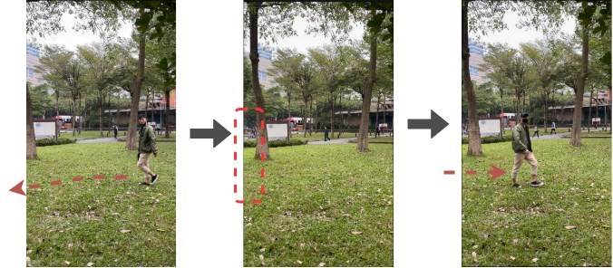

觀看團隊 Demo（YouTube） · 團隊程式與操作說明
要解決的問題
人物轉身、被遮住，或離開鏡頭再出現時，連續追蹤可能換掉原本的編號；臉部也不一定清楚可見。團隊整合追蹤、人臉辨識與行人重新識別，嘗試將分散的追蹤片段接起來。
把「看起來像同一人」轉成可比較的特徵
我主要負責 ReID 模組，整合既有模型，把人物照片轉成外觀特徵向量，再比較兩段追蹤的相似程度。這讓系統多一個線索：臉部不清楚、追蹤中斷時，仍可利用人物外觀協助連接紀錄。基礎模型使用 FastReID，我的工作是整合與比對流程。
不只看一張照片，也看有多少比對支持
一段追蹤包含多張照片，角度、遮蔽與影像品質都會變。我處理從追蹤片段取樣、多張照片交叉比對，再用兩層條件判斷：先檢查每對照片是否夠相似，再檢查支持同一身分的比對比例是否足夠。這是本人實作的比對邏輯，不把相似度直接當成身分已確認。
讓模型接得上追蹤紀錄
模型算出相似度後，還要知道哪些新片段該比對、哪些工作已完成、結果該更新到哪裡。我實作待比對工作佇列與紀錄管理，接收新追蹤片段、安排比對、整理更新結果，讓 ReID 能接進團隊的整體流程。
我的部分與團隊的部分
我的重點是 ReID 特徵整合、取樣匹配、相似度與雙門檻判斷，以及紀錄佇列。人物追蹤、人臉辨識與完整系統屬團隊合作；第三方模型與方法保留原作者歸屬。連結中的 Demo 展示團隊系統，頁首圖片是團隊拍攝的測試情境。
成果與驗證
團隊完成畢業專題並錄製遮蔽、擦肩而過、離開後再出現等情境測試，獲 2020 年東吳大學畢業專題第一名。這是學生專題與情境測試；即時運作仍有限制，沒有宣稱商用部署或整體辨識準確率。
FastReID · Cosine similarity · Person ReID